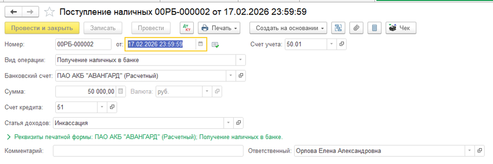
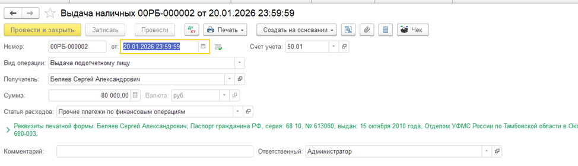
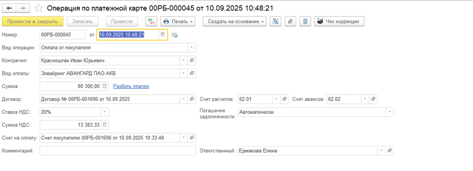
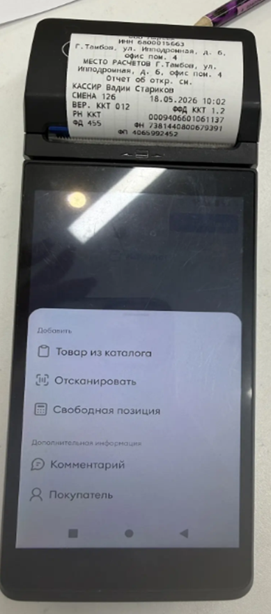

🎯 Цель модуля
Научить сотрудника правильно работать с кассовыми операциями, понимать внутренние процессы компании, а также уверенно ориентироваться в работе с 1С, эквайрингом и системой AbilityCash.
📜 Нормативная база
Порядок ведения кассовых операций на территории РФ регулируется:
- Указанием Банка России №3210-У от 11.03.2014
- Указанием ЦБ РФ №4416-У от 19.06.2017
- Внутренними регламентами компании
💵 Приходный кассовый ордер (ПКО)
ПКО используется при поступлении денежных средств в кассу организации.
Типовые операции:
- ✔ Оплата от покупателя
- ✔ Розничная выручка
- ✔ Возврат от подотчетного лица
- ✔ Получение наличных в банке
- ✔ Возврат от поставщика
- ✔ Прочий приход


💸 Расходный кассовый ордер (РКО)
РКО оформляется при выдаче денежных средств из кассы.
Типовые операции:
- ✔ Оплата поставщику
- ✔ Возврат покупателю
- ✔ Выдача под отчет
- ✔ Выплата заработной платы
- ✔ Инкассация
- ✔ Выдача займа сотруднику
📖 Кассовая книга
Кассовая книга — это отчет, в котором фиксируются все операции с наличными денежными средствами за день.
Основные особенности:
- Формируется автоматически в 1С
- Создается на основании ПКО и РКО
- Ведется ежедневно при наличии движений по кассе
- Поддерживает электронную подпись
🏦 Лимит остатка кассы
Согласно внутренним правилам компании, лимит остатка денежных средств в кассе составляет:
При превышении лимита денежные средства передаются в кассу директора.
💳 Проведение оплаты
Оплата может производиться:
- ✔ Наличными средствами
- ✔ Банковской картой
- ✔ Через эквайринг
🧾 Работа через эквайринг — Навикон
При проведении оплаты через эквайринг Авангард:
🏪 Работа с терминалом ВТБ — Парсек
Оплата банковской картой производится через терминал ВТБ.
1. Открытие кассовой смены
ВТБ Касса → Кассовые операции → Открыть кассовую смену
2. Создание продажи
Продажи → Создать → Выбрать товары/услуги
3. Выбор формы оплаты
Наличные или банковская карта
4. Закрытие смены
Формируется Z-отчет и справка КМ-6

📥 Приход денежных средств
При поступлении оплаты менеджеры отдела продаж передают информацию в чат Битрикс24 с расшифровкой платежа.
Далее информация вносится в систему AbilityCash по соответствующим статьям прихода денежных средств.
📤 Расход денежных средств
При расходе денежных средств создается операция с типом «Расход».
Обязательно указывается:
- ✔ Сумма
- ✔ Статья расхода
- ✔ Назначение платежа
- ✔ Комментарий

⚠ Важно помнить
- Все кассовые операции должны оформляться своевременно
- Запрещено проводить операции без основания
- Необходимо соблюдать лимит кассы
- Любые ошибки могут привести к расхождениям в учете
Модуль завершен
После изучения материала сотрудник должен: